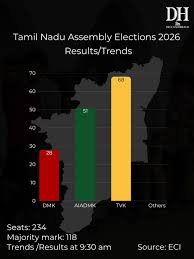

TN Result of 2026
When film star-turned-politician C Joseph Vijay's newly-formed political party won the most number of seats in the recent election in the Indian state of Tamil Nadu, it was hailed as historic. But five days after Monday's vote-counting, political uncertainty prevails in the southern state, with no clarity on when a new government could be formed or who would form it. Vijay's party Tamilaga Vettri Kazhagam (TVK) won 108 seats - leaving him 10 seats short of a majority in the 234-member assembly. India's main opposition Congress party, which has five seats, has pledged support. But Vijay has to win support from at least five more members and there is still no clarity on who they would be Elections to appoint the 234 members of the 17th Tamil Nadu Legislative Assembly, the highest body of the Government of Tamil Nadu, were held on 23 April 2026. The results were declared on 4 May 2026 by the Election Commission of India. It recorded the highest voter turnout in the state's history (85.1%). The new party Tamilaga Vettri Kazhagam (TVK), founded by Tamil actor C. Joseph Vijay, emerged as the single largest party in its first-ever election and ended a 59-year streak of dominance of Dravidian parties in the state. The TVK contested alone in 233 constituencies.[a] It positioned itself as a rival to the oscillating duopoly of the Dravida Munnetra Kazhagam (DMK) and the All India Anna Dravida Munnetra Kazhagam (AIADMK), and an ideological opponent of the Bharatiya Janata Party, the ruling party of the Government of India. The incumbent DMK led the Secular Progressive Alliance (SPA), which was part of the Indian National Developmental Inclusive Alliance led by the Lok Sabha opposition, the Indian National Congress (INC); the SPA swept all the 39 seats in the state in the 2024 Lok Sabha election. The opposition AIADMK was part of the BJP's National Democratic Alliance (NDA). Opinion poll agencies projected a second consecutive term for the DMK or a return to power for the AIADMK. In an upset result, the TVK surpassed the tallies of the DMK and AIADMK alliances, amassing 108 seats but short of majority (118). The SPA was reduced to 73 seats, with the DMK securing 59 and the INC five. The NDA won 53 seats, with the AIADMK securing 47 and the BJP only one. This created Tamil Nadu's first hung assembly. The AIADMK lost its official opposition status to the DMK. This election marked the first time a non-Dravidian party emerged as the largest party in the assembly since the 1960s, breaking a tradition of power alternating between the DMK and the AIADMK.[b] The outgoing Chief Minister of Tamil Nadu, M. K. Stalin of the DMK, lost his election from the Kolathur constituency where he had previously won thrice consecutively.[c] The TVK's chief-ministerial candidate Vijay won both the Perambur and Tiruchirappalli East constituencies he contested in.[d] The AIADMK's former Chief Minister, Edappadi K. Palaniswami, retained Edappadi with the widest winning margin in the state.[e] On 5 May 2026, Stalin resigned as Chief Minister. The next few days, Vijay met the Governor of Tamil Nadu, Rajendra Arlekar, multiple times to stake claim to the formation of the new government, resulting in tensions and uncertainty. Vijay pursued a majority by inviting SPA parties other than DMK to render their support; INC left the SPA and joined the TVK government, while four other SPA parties extended their support to a TVK-led coalition government without leaving the alliance.[f] Upon confirming a majority to Arlekar, Vijay was sworn in as Chief Minister on 10 May 2026. Political critics and journalists stated that the anti-incumbency against the DMK government, Vijay's mobilization of his fanclubs into an unified party, TVK's strong well-funded and organised digital campaign portraying itself as a fresh, corruption-free alternative as opposed to the perceived fatigue over the Dravidian tenures as major factors that fueled Vijay's success, drawing comparisons with former actor-turned-Chief Ministers M. G. Ramachandran and J. Jayalalithaa. Analysts reported that TVK hauled the votebanks of both the DMK and AIADMK, pulling their youth, women, urban, and first-time voters irrespective of caste or religious affiliations, and attributed Vijay's appeal more to a promise of change rather than a meticulous ideology.[1][2][3][4] According to a BBC article, BBC described TVK winning 108 seats in the 2026 Tamil Nadu Assembly election as “probably the first election in India won almost entirely with the help of social media.”[5]
